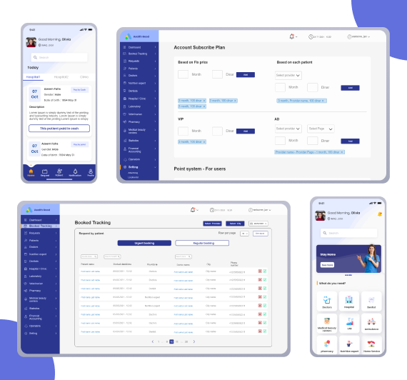
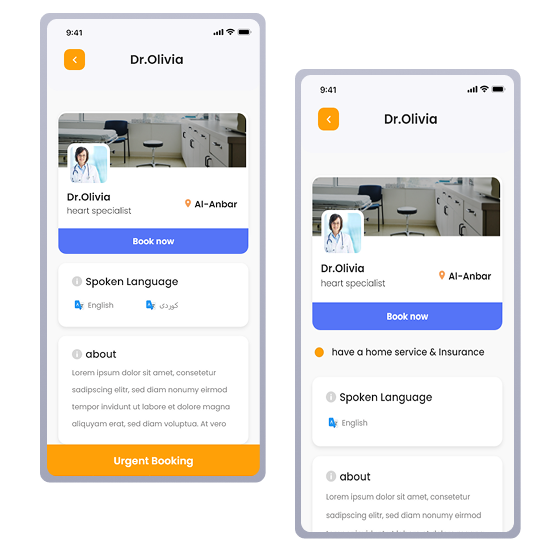
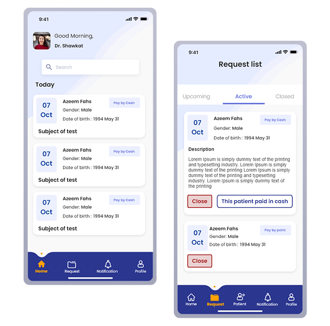

13
client review sessions, zero full redesigns
A B2B2C platform connecting patients to doctors, dentists, labs, pharmacies, and home care services — designed across three separate apps with a team of 7, from kickoff to delivery in 7 months.

Section 02
In 2021, booking a doctor in Iraq meant phone calls and personal connections. No shared platform, no digital records, no online payment — just fragmented services and patients navigating alone.
No payment infrastructure
Online payment wasn't viable for most users. The platform had to be designed around cash-first booking — which meant the design itself had to create trust, not payment confirmation.
Connectivity gaps
Providers in Kurdistan work in clinics with unstable internet. Offline capability wasn't optional — a doctor missing a request due to a dropped connection is a clinical failure.
B2B2C cold-start
Providers needed to join before patients had reason to use it. Every onboarding decision had to make joining feel low-effort and low-risk for the provider side first.
Section 03 — Research
This project had three distinct user types, each with a completely different mental model of what "healthcare booking" means. Before touching wireframes, I needed to map those models and find where they conflicted.
I was embedded with the client from day one. Rather than a single research phase, discovery ran continuously across the project — I conducted 13 structured review sessions directly with the client between July and December 2021, maintained a live tracker of every client request with platform, date, response, and status, and worked in direct communication with the development team of 4 to understand what was technically feasible in the Iraqi market context.
I also led the information architecture phase, producing a full IA map covering all three apps before any wireframes began.
13 structured client review sessions
July – December 2021, covering all three platforms
Live request tracker
Platform, date, response, and status logged for every client ask
Full IA map — all three apps
Produced before any wireframes, co-annotated by client, dev team, and design team
Continuous dev collaboration
Direct communication with 4 developers on technical feasibility in the Iraqi market context
Three users, three mental models
Patients, providers, and admins don't just use different features — they think about healthcare completely differently. Designing for one without understanding the others creates friction at every handoff point.
Thinks in
Symptoms & availability
They don't know which specialty they need — they know they have a back problem and want someone nearby, soon, who accepts cash. The IA had to support browsing by category, not just search by name.
Thinks in
Calendar slots & patient load
A doctor managing 30+ appointments a week needs to see upcoming, active, and closed requests at a glance. The provider app's home screen had to be a request queue, not a dashboard.
Thinks in
Oversight & control
Vet every provider before they go live, track financials, manage subscriptions, resolve disputes — all from one portal. The admin panel ended up being the most complex surface: 15+ sections across 3 roles.
Key insights that changed the design
Iraq had no reliable digital payment infrastructure in 2021. Early assumptions about integrating online payment were replaced with a cash-first booking model — patients confirm in-app, pay at the clinic. This fundamentally changed the booking confirmation flow: without payment as the trust signal, the design itself had to create confidence that the appointment was real and secured.
Providers in Kurdistan frequently work in clinics with unstable internet. A provider missing an appointment request because of a dropped connection is a critical failure. This drove the decision to build offline capability into the provider app from v1 — not as a nice-to-have, but as a core requirement.
The platform had to support 12 distinct service categories — each with its own provider type, booking logic, specialty list, and user flow. Doctors alone had 22 medical specialties. Labs had 80+ test types. Medical beauty centers had 20+ treatments across 3 sub-categories. This depth had to be organised under a single home screen without overwhelming a patient who just wants to book a cardiologist.
The IA output
The full wireframe map covered all three apps simultaneously — annotated with client questions, developer comments, and design team notes. A shared working document that kept 7 people aligned across a 7-month build.
Admin Panel
15+ sections · 3 roles
Patient App
12 service categories · full booking flow
Provider App
4 provider types · request queue flow
Section 04
Every project has a handful of decisions that actually define the product. These are mine.
01 —
Online payment wasn't viable for most users in Iraq. Early designs assumed payment confirmation would create booking trust. That assumption was wrong for this market.
Designed the confirmation flow to carry trust — in-app booking confirmation, pay at the clinic. The UI had to make a cashless confirmation feel real and secured.
Every element of the booking confirmation — the code, the summary, the SMS — existed because payment couldn't. Design replaced payment as the trust signal.

02 —
Urgent and regular bookings were one flow with a toggle. Patients didn't understand the price difference. Providers couldn't manage urgent slots separately.
Orange exclusively signals urgency across all three apps. Urgent and regular are distinct data types — different price, different calendar logic, different notification trigger.
A UI decision drove a backend architecture decision. Color wasn't decoration — it was a data boundary made visible.

03 —
Providers in Kurdistan work in clinics with unstable internet. A missed appointment request due to a dropped connection is not a UX inconvenience — it is a clinical failure with real consequences for patients.
Offline sync built into the provider app from v1. Not a phase 2 feature. Requests queue offline and sync when connection restores. Providers never lose data.
Treating offline as a core requirement changed the technical architecture from day one. This design decision had to be made before development started — not retrofitted after.

Section 05
Three apps, one design system, one coherent experience across patient, provider, and admin.
01
Patient app
Find, filter, book, track across 12 service categories
02
Provider app
Receive requests, manage calendar, work offline in low-connectivity environments
03
Admin portal
Vet providers, manage platform, 3 user roles from one codebase
01 — Patient app
The central challenge was organising 12 service categories under one home screen without overwhelming a patient who just needs a cardiologist. The solution was a two-tier structure — primary services visible immediately, secondary services below. Location selector anchored at top because patients in this market think "who is near me" before "which specialty do I need."

02 — Provider app
The provider app's home screen is a request list, not a dashboard. Providers don't need statistics when they open the app — they need to know what's next. Three tabs: Upcoming, Active, Closed. Each request card shows only what matters: patient name, date, time, accept or reject. Nothing else on the primary view.
Provider app — Request queue
Replace with Figma screenshot
03 — Admin portal
The admin portal was the most complex surface in the system — managing every provider, patient, booking, and financial transaction across the platform. The doctor management page shows the density challenge: 15+ fields organised into clear sections so an admin can onboard a new doctor without missing critical information. Three login roles, three different experiences, one codebase.
Admin portal — Doctor management
Replace with browser screenshot
Section 06
13
client review sessions, zero full redesigns
30+
v1 features shipped across 3 platforms
14
bugs resolved within 3 weeks of final review
Every v2 feature — pharmacy ordering, veterinarian, telemedicine video — was wireframed and handed off as a ready-to-build backlog. The platform was designed to scale, not just to ship.
The provider app reached clinicians in low-connectivity areas of Kurdistan through offline sync — a feature treated as a core requirement from day one, not added after the fact.
Scope discipline kept v1 on time. The client request tracker logged every new request with a clear response — implemented, out of scope, or deferred. That discipline is the outcome no metric captures.
Section 07
01
Design the redemption before the reward
The points system earning model was agreed before the redemption flow was designed. The two are inseparable — a patient who earns points they don't know how to use loses trust, not gains it. I'd refuse to design either without the other in the room.
02
Protect the research time
I wore four hats on this project — UX lead, admin UI contributor, client liaison, and informal PM. The delivery was strong, but the PM workload compressed the time available for deeper user research. The onboarding flows — the most critical moment in a market new to digital healthcare — were underinvested as a result.
03
Test the trust model before building the flow
The cash-first booking model was the right call for this market. But we designed the confirmation flow before validating whether patients trusted a digital confirmation without payment. I'd run low-fidelity concept tests with real patients first — five conversations before committing to an architecture.
Designing for a new market means questioning every convention before using it. That discipline — of asking "does this actually apply here?" before designing — is what this project taught me, and what I'd carry into every project that follows.